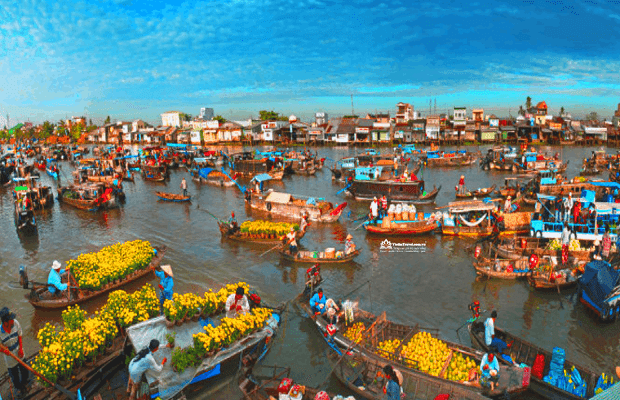
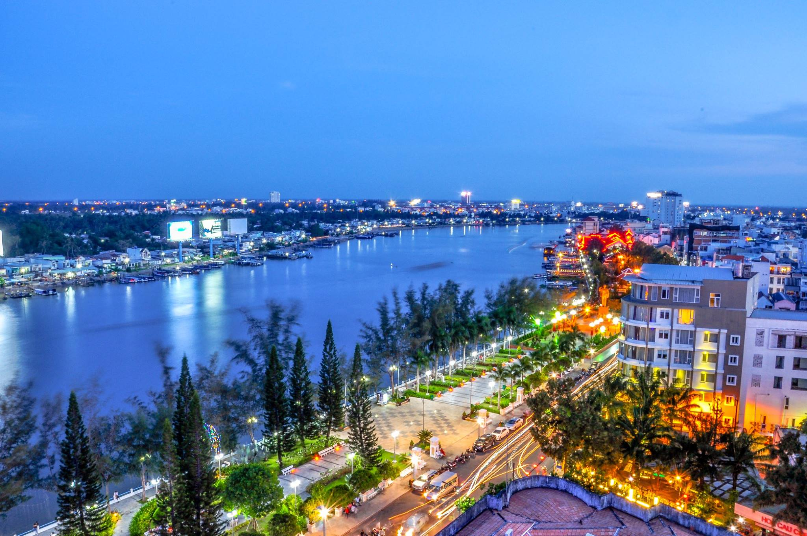
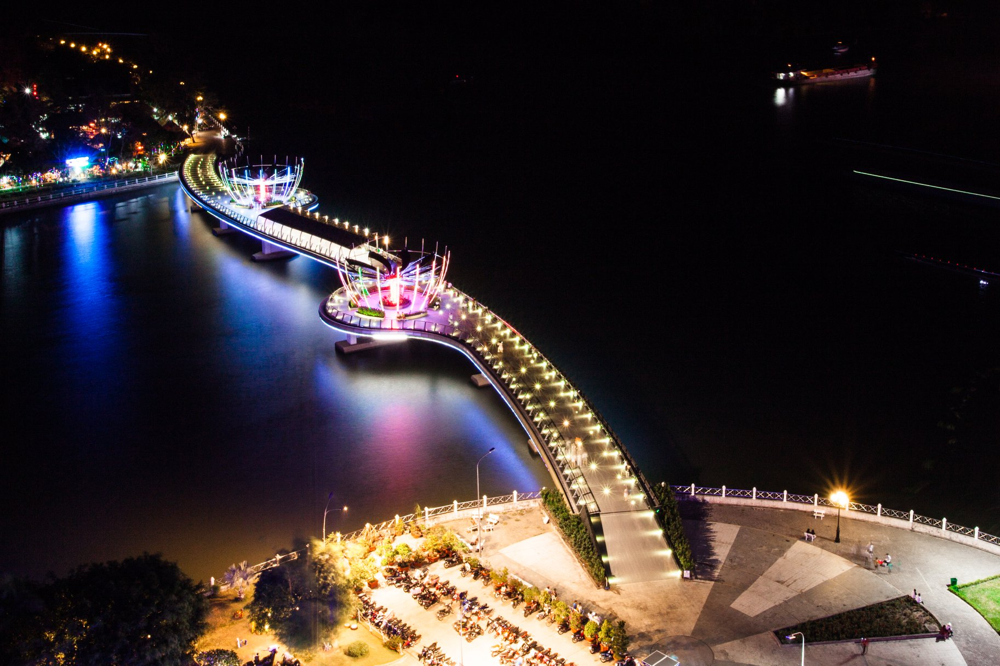
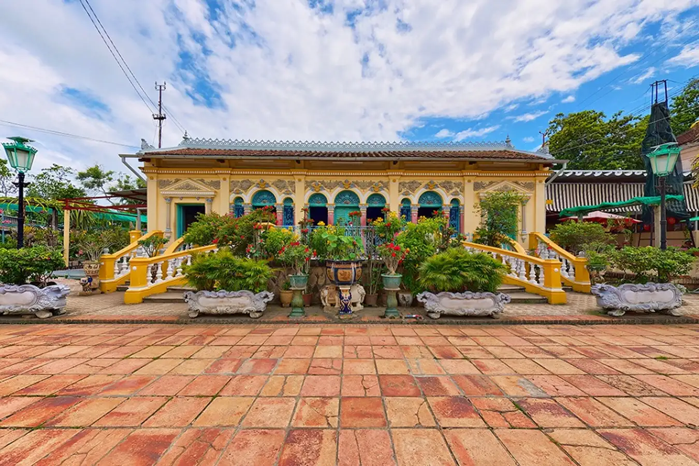

NHỮNG ĐỊA ĐIỂM DU LỊCH BẠN NHẤT ĐỊNH PHẢI GHÉ THĂM KHI ĐẾN CẦN THƠ
Cần Thơ thuộc khí hậu nhiệt đới gió mùa với hai mùa mưa và khô rõ rệt. Thời tiết mát mẻ quanh năm rất thích hợp cho các hoạt động du lịch, vui chơi và khám phá.
Tuy nhiên thời gian lý tưởng nhất để du lịch Cần Thơ là vào mùa hè, khoảng thời gian từ tháng 5 đến tháng 8, khi những vườn trái cây đến vụ thu hoạch.
Tháng 9 đến tháng 11 là mùa nước nổi, rất thích hợp để du khách khám phá cuộc sống dân dã của người dân miền Tây và thưởng thức những đặc sản chỉ có khi mùa nước lũ về. Từ tháng 12 đến tháng 2 là thời điểm cận Tết, Cần Thơ rực rỡ sắc hoa và rộn ràng của không khí lễ hội. Dù vậy, đến Cần Thơ vào mùa nào bạn cũng đều sẽ cảm nhận được vẻ đẹp đằm thắm, nhẹ nhàng của con người và cảnh quan thiên nhiên nơi đây.
Top những địa điểm du lịch tại Cần Thơ thu hút nhất năm 2024
1. Chợ nổi Cái Răng
- Người dân miền Tây quanh năm sông nước, với bản chất hiền hậu, mến khách gắn liền với những ghe xuồng mộc mạc. Cuộc sống của họ được diễn ra ngay trên sông từ việc ăn, ngủ, đi chợ, giao lưu mua bán và trao đổi hàng hóa. Cần Thơ có khu chợ nổi tiếng nào đã được lên nhiều báo chí trong nước và quốc tế? Đó chính là chợ nổi Cái Răng.

- Là khu chợ nổi trên sông, các hoạt động trao đổi mua bán đều được diễn ra trên thuyền đầy sôi nổi, mang nét văn hóa khó nhầm lẫn của sông nước miền Tây.
- Khu chợ nổi Cái Răng không chỉ thể hiện cuộc sống thường ngày của người dân nơi đây mà còn toát lên nét mộc mạc, giản dị gần gũi khiến du khách khó quên.
- Các mặt hàng được bán trên chợ chủ yếu là nông sản, hoa quả do người dân địa phương trồng trọt. Hoạt động của khu chợ thường được diễn ra từ 4h30 - 8h sáng
2. Bến Ninh Kiều
- Ngoài khu chợ sôi nổi, tấp nập trao đổi mua bán, địa điểm du lịch Cần Thơ còn có rất nhiều những địa danh nổi tiếng đã đi vào thơ ca. Thậm chí còn trở thành biểu tượng của thành phố mỗi khi nhắc tới. Nếu đặt câu hỏi bến Ninh Kiều Cần Thơ có gì chơi vui hay không, thì câu trả lời sẽ là bạn nhất định phải ghé địa điểm nổi tiếng này.

- Đây là địa danh biểu tượng của thành phố Cần Thơ. Bến nước Ninh Kiều có từ thế kỉ 19 hay còn có tên gọi khác công viên Cần Thơ.
- Không ai đến Cần Thơ mà lại không đặt chân tới địa điểm du lịch Cần Thơ nổi tiếng này bởi cảnh sắc hài hòa, tọa lạc giữa ngã ba sông Cần Thơ và sông Hậu. Từ đây, bạn cũng có thể dễ dàng di chuyển tới các địa điểm du lịch Cần Thơ khác.
- Bên trong khu vực công viên bến Ninh Kiều còn có nhà hàng Thủy Tạ với rất nhiều món ăn ngon và độc đáo chờ đón du khách.
3. Cầu đi bộ Cần Thơ
- Nếu ở Hà Nội có cầu Thăng Long, Huế có cầu Tràng Tiền, thì ở Cần Thơ có cầu đi bộ rất nổi tiếng, được rất nhiều bạn trẻ lựa chọn làm nơi check in lý tưởng đó chính là cầu đi bộ Cần Thơ. Cầu được bắc ngang qua sông Hậu, về đêm được thắp sáng bởi hệ thống đèn led lung linh, huyền ảo.

- Là cây cầu gần bến Ninh Kiều, mới xây dựng vài năm. Chiều dài 200m, rộng hơn 7m, có đèn led và đèn âm dưới cầu, có điểm nhấn 2 bông sen ở giữa thân cầu.
- Đứng từ cầu nhìn được toàn cảnh bến Ninh Kiều, sông Hậu mỗi sáng, tối thì có ánh đèn lung linh, đây cũng là địa điểm check in lý tưởng của giới trẻ.
4. Nhà cổ Bình Thủy
- Đến với Cần Thơ, khi nhắc tới du lịch Bình Thủy chắc chắn không thể thiếu địa điểm du lịch nhà cổ Bình Thủy, ngôi nhà họ Dương với lối kiến trúc độc đáo nhận được rất nhiều sự quan tâm của khách du lịch nhờ tuổi thọ lâu đời và kiến trúc độc đáo

- Được xây dựng năm 1870 bởi nhà họ Dương với hơn 151 năm tuổi vẫn giữ được gần như nguyên vẹn.
- Nhà có kiến trúc cổ xưa, mang thiết kế độc đáo, tới nay gần như các nét kiến trúc vẫn được đánh giá cao về tính nghệ thuật.
- Nhà đã góp mặt trong nhiều bộ phim Việt nổi tiếng như: Những nẻo phù sa, Người đẹp Tây Đô… để lại dấu ấn sâu đậm trong lòng người Việt.
5. Thiền viện Trúc Lâm
- Nằm cách thành phố Cần Thơ không xa, ước chừng 15 km, Thiền viện Trúc Lâm mang lại cảm giác bình yên, tĩnh tâm cho du khách khi tới đây tham quan.

- Đây là thiền viện có diện tích và quy mô lớn nhất đồng bằng sông Cửu Long.
- Mang kiến trúc độc đáo, cửa vào mái vòm, đầu rồng tạo điểm nhấn ấn tượng cho du khách.
- Du khách tới tham quan sẽ được ngắm nghía vẻ đẹp cổ kính của thiền viện, vừa cầu an, lại vừa được tìm đến chốn thanh tịnh.
6. Bảo tàng quân khu 9
- Nếu muốn tìm một cách ngắn nhất để có thể tìm hiểu được văn hóa và con người Cần Thơ đừng bỏ qua địa điểm bảo tàng quân khu 9, nơi lưu trữ những năm tháng đấu tranh hào hùng của dân tộc và người dân nơi đây
- Là địa điểm lưu trữ các hiện vật lịch sử gắn với chiến công hào hùng của nhân dân Cần Thơ trong hai cuộc kháng chiến chống Pháp và Mỹ.
- Tham quan bảo tàng giúp du khách có trải nghiệm, hiểu hơn về lịch sử, thành phố Cần Thơ, về văn hóa lịch sử con người nơi đây.
- Địa chỉ: Số 6 đường Hòa Bình, quận Ninh Kiều, TP. Cần Thơ.
Trang trước